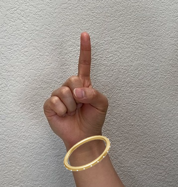
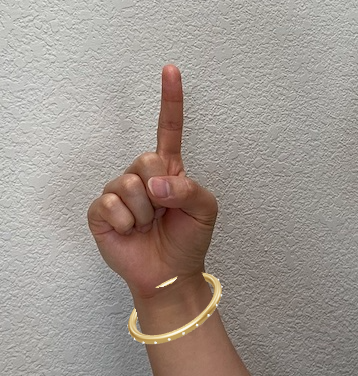
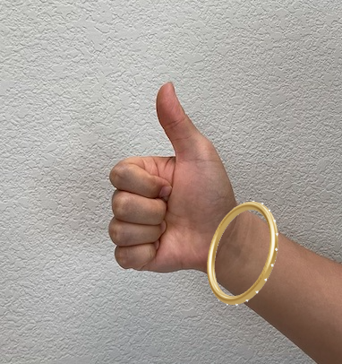
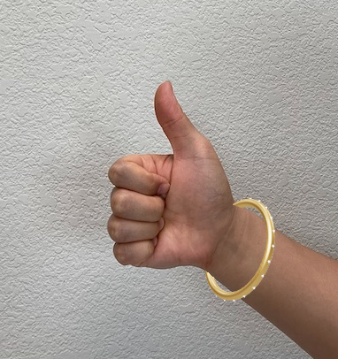

Official MediaPipe photos; current user photo unavailable. Chưa có ảnh đang lỗi của người dùng để nghiệm thu. Trong B, phần vòng phía sau da có thể không nhìn thấy; geometry vẫn là torus 360°.
Đo: 78.0 px · lỗ vòng: 86.4 px · image · Manual 100% · tâm (175.0, 306.1) px.


Các lát cắt đạt kiểm tra
Đo: 90.0 px · lỗ vòng: 99.1 px · image · Manual 100% · tâm (268.8, 281.2) px.


Các lát cắt đạt kiểm tra
Đo: 90.0 px · lỗ vòng: 105.5 px · image · Manual 100% · tâm (285.3, 663.3) px.
implausible-pair: tâm/bề rộng không hợp lý: 1; skin-core-uncertain: tâm lát cắt không đủ tin cậy là da tay: 4; contour-width-outlier: độ rộng khác nhóm biên nhất quán: 3